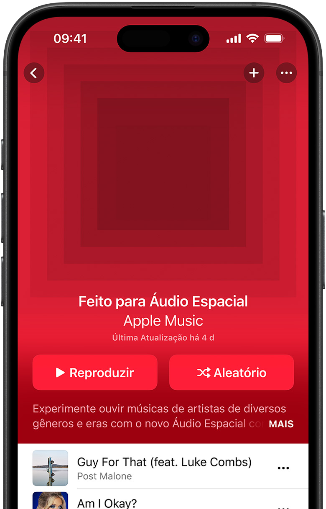
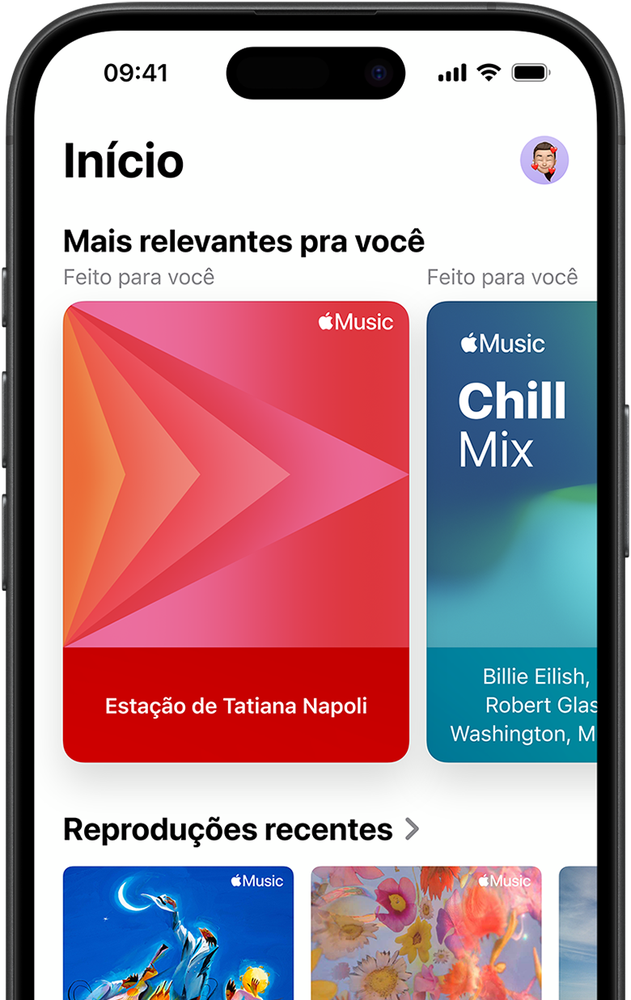
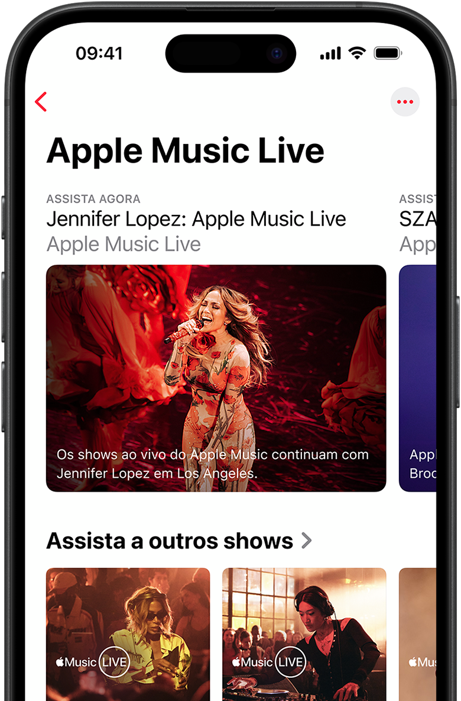
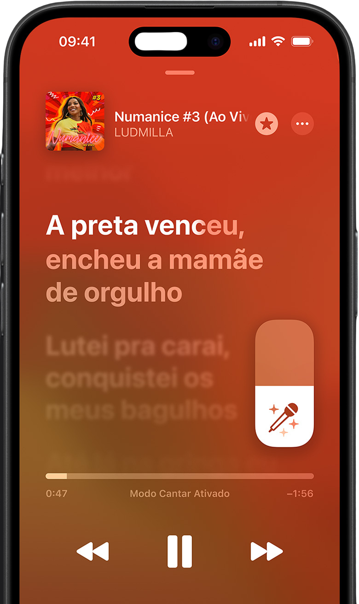
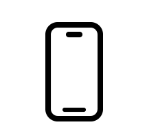
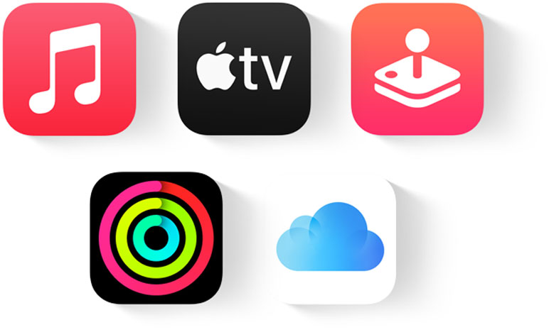

Aproveite o teste gratuito e ouça a diferença*.
Saiba mais >Por amor
à música.
Mais de 100 milhões de músicas, sempre
sem
comerciais.
Ouça som de alta qualidade com Áudio
Espacial¹ e Lossless².
Solte a voz com o Apple Music Sing. Tenha acesso exclusivo
a
entrevistas e shows ao vivo. E toque em todos os seus aparelhos,
on ou offline. Se você ama
música, este é seu app.
Novas assinaturas
ganham 1 mês
Um mês grátis de Apple Music
para novas assinaturas.
Depois pague R$
21,90 por mês.
1 mês de graça
no Apple One
Reúna o Apple Music com até
quatro serviços incríveis por um
valor mensal
menor.
Assinatura Universitária
com Apple TV+
Estudantes ganham um mês
de Apple Music, e ainda têm
acesso ao Apple TV+.
Ganhe 3 meses de Apple Music na compra de aparelhos qualificados◊.
Qualidade de áudio
Venha para uma
nova dimensão do som
Recursos integrados elevam as músicas a outro nível. Com Áudio Espacial e Dolby Atmos o som parece vir de todos os lados, envolvendo você¹. E o áudio Lossless preserva cada detalhe das gravações originais². Tenha uma grande experiência sonora toda vez que você ouvir.

Descoberta musical
Um mundo de
músicas querendo
conhecer você.
Curta mais de 100 milhões de músicas Ouça playlists personalizadas e as estações na aba Início, ou confira as novidades na estação Descobertas. Explore vários gêneros na aba Novo e receba notificações automáticas para não perder nada sobre suas bandas e vozes favoritas. Use o app Shazam para descobrir o que está tocando, salve nas suas playlists e não deixe nenhuma música boa escapar.

Conteúdo exclusivo
Os bastidores da música.
É por aqui.
Assista a shows ao vivo da primeira fila no Apple Music Live. Acesse entrevistas que revelam as histórias por trás das músicas e artistas que você adora. Sintonize 24 horas por dia rádios locais e internacionais e programas e estações apresentadas por artistas. E explore os discos mais marcantes nos 100 melhores álbuns do Apple Music.
Ouça ao vivo de graça >
Apple Music Sing
Agora é
com vocês.
No Apple Music Sing, você e sua turma cantam juntos milhões de músicas. Letras em tempo real acompanham o ritmo e vocais ajustáveis dão o controle sobre o volume do vocalista — você escolhe se faz a voz principal ou a de fundo. A visualização em dueto exibe a parte de cada pessoa em lados opostos, para ninguém perder sua parte.

Ouvir em Grupo
Libere a
playlist para
a galera.
Escute música com amigas e amigos de onde você estiver. Nas playlists colaborativas, você convida sua turma para adicionar, remover mudar a ordem e reagir às músicas, para interagir mesmo a quilômetros de distância7. E, no CarPlay com SharePlay , todo mundo pode contribuir na trilha sonora da viagem.
Apple Music Classical
O app definitivo
da música clássica.
O app Apple Music Classical é todo dedicado ao gênero clássico. Ouça o maior catálogo de música clássica do mundo com a mais alta qualidade de áudio disponível e aproveite uma ferramenta poderosa de busca, projetada especificamente para as nuances desse gênero. Tudo incluído na sua assinatura do Apple Music.
Ouvir agora >O Apple Music toca
em todos os seus
aparelhos favoritos.

iPhone
iPad
Apple Watch
Mac
Apple TV
Ainda mais lugares
para ouvir o Apple Music.
ideal para você.
Sem compromisso. Você cancela quando quiser.
Assinatura
Universitária
R$ 11,90 por mês
*Acesso a músicas e artistas variados
*Acesso a Sirip
*Remoção de
comerciais
*Conteúdo muscial exclusivo
*Apple Music Classical & Sing
*Áudio
Espacial Dolby Atmos
*Baixar músicas
*Atividades dos amigos
Assinatura
Individual
R$ 21,90 por mês
*Acesso a músicas e artistas variados
*Acesso a Sirip
*Remoção de
comerciais
*Conteúdo muscial exclusivo
*Apple Music Classical & Sing
*Áudio
Espacial Dolby Atmos
*Baixar músicas
*Atividades dos amigos
Assinatura
Familiar
R$ 34,90 por mês
*Acesso a músicas e artistas variados
*Acesso a Sirip
*Remoção de
comerciais
*Conteúdo muscial exclusivo
*Todo o resto dos outros planos
*Acesso
ilimitado
para 6 pessoas
*Biblioteca indivudual
*Recomendações individuais personalizadas
Juntamos até cinco
serviços da Apple
para você aproveitar
mais por menos.

A Assinatura Universitária do
Apple Music vem com
Apple TV+ grátis.
Perguntas? Nós temos as
respostas.
O Apple Music é um serviço de streaming em que você pode ouvir mais de 100 milhões de músicas.
Ele tem recursos
para você baixar suas faixas favoritas e ouvir sem conexão, ver as letras em
tempo real, escutar em todos os seus
aparelhos, receber recomendações personalizadas de novas
músicas, playlists feitas por nossos editores e muito mais.
Além de tudo isso, você tem
acesso a
conteúdo original e exclusivo.
Sua biblioteca do iTunes continua disponível. Você pode acessar toda a sua coleção no Apple
Music ou no iTunes para
macOS ou Windows.
O Apple Music já vem incluído no iPhone, iPad, Apple Watch, Apple TV 4K e Mac, e você também pode
ouvir com o
CarPlay ou online em music.apple.com/br. Além disso, o Apple Music está disponível
para aparelhos com Windows e
Android, caixas de som Sonos, Amazon Echo, Google Nest, Smart
TVs e
muitos outros.
Depende da opção que você escolher. (1) Estudantes podem optar pela Assinatura Universitária do
Apple Music por
R$ 11,90 por mês. (2) A Assinatura Individual custa apenas R$ 21,90 por mês.
(3)
Com a Assinatura Familiar do
Apple Music, até cinco pessoas podem usar sua conta no grupo de
Compartilhamento Familiar, e você paga apenas
R$ 34,90 por mês. (4) As assinaturas Individual
e
Familiar do Apple Music também estão incluídas no Apple
One, que
reúne outros quatro serviços Apple e está disponível a partir de R$ 42,90
por
mês.
O Apple Music Classical está incluído nas Assinaturas Universitária, Individual e Familiar do
Apple Music.
Estudantes têm acesso aos mesmos recursos e benefícios da Assinatura Individual. Assim que
confirmarmos seu
status em uma universidade, você poderá aproveitar a Assinatura
Universitária por até quatro anos, enquanto continuar
sendo estudante. Depois de quatro anos,
sua assinatura será renovada com o valor da Assinatura Individual.
Sim. Com um aparelho compatível com a Siri e qualquer assinatura do Apple Music, você pode
acessar todos os
recursos do Apple Music e a Siri. Todas as assinaturas também são
compatíveis com o recurso Digitar para a Siri.
O Dolby Atmos é uma tecnologia de áudio que coloca você no centro de uma experiência envolvente
com som por
todos os lados.
Os assinantes do Apple Music com a versão mais recente do
Apple Music no iPhone, iPad, Mac e Apple TV 4K podem
ouvir milhares de faixas com Dolby Atmos
usando qualquer fone de ouvido. A reprodução com Dolby Atmos será
automática quando você
escutar com fones de ouvido Apple ou Beats compatíveis, ou com a maioria dos fones de
ouvido
Bluetooth, se o formato estiver disponível para a música. Para outros fones de ouvido, vá até
Ajustes > Música >
Áudio e configure a opção Dolby Atmos como Sempre Ativo. Você também pode
ouvir músicas com Dolby Atmos
usando os alto-falantes integrados em um iPhone, iPad, MacBook
Pro, MacBook Air ou iMac compatível ou conectando
sua Apple TV 4K a um dos seguintes
aparelhos: soundbar compatível com Dolby Atmos, receptor AV compatível com
Atmos ou
televisão compatível com áudio Dolby Atmos. Para ver a lista completa de aparelhos,
consulte
support.apple.com/pt-br/HT212182.
A compressão de áudio Lossless reduz o tamanho do arquivo original da música, mas preserva todos
os dados com
perfeição. O Apple Music está disponibilizando todo o seu catálogo de mais de
100 milhões de músicas em resoluções
diferentes de áudio Lossless. No Apple Music, “Lossless”
indica o áudio Lossless de até 48 kHz, e “Hi-Res Lossless” se
refere ao áudio Lossless de 48
kHz a 192 kHz. Os arquivos Lossless e Hi-Res Lossless são maiores e usam mais
largura de
banda e espaço de armazenamento do que os arquivos AAC padrão.
Você pode ouvir usando o
app Apple Music mais recente no iPhone, iPad, Mac ou Apple TV 4K. Ative o áudio Lossless
em
Ajustes > Música > Qualidade do Áudio. Escolha entre Lossless e Hi-Res Lossless para conexões de
rede celular ou
Wi-Fi. Para Hi-Res Lossless, é preciso usar um equipamento externo, como um
conversor USB de digital
para analógico.
Para ver a lista completa de aparelhos
compatíveis, consulte
support.apple.com/pt-br/HT212183.
Sim. Com a Assinatura Familiar, até seis pessoas podem aproveitar todos os recursos e o catálogo
completo do
Apple Music. Para começar, é só configurar o Compartilhamento Familiar no seu
aparelho com iOS ou iPadOS, celular
Android ou computador Mac e convidar seus familiares para
participar.
O Apple Music não tem publicidade.
Novas assinaturas têm direito a três meses de Apple Music grátis com um aparelho qualificado.
Para resgatar a oferta
no iPhone, iPad, Mac ou Apple TV, configure seu novo aparelho. Para
resgatar a oferta nos AirPods ou fones de ouvido
e caixas de som Beats, conecte ou emparelhe
seu aparelho qualificado a um iPhone ou iPad com a versão mais recente
do iOS ou iPadOS.
Para resgatar a oferta no Apple Watch, conecte ou emparelhe seu aparelho qualificado a um
iPhone
com a versão mais recente do iOS. Você tem três meses para resgatar a oferta a partir
da primeira ativação do
aparelho qualificado◊.
O Apple Music Classical é um app que acompanha a assinatura do Apple Music. Ele está incluído sem
custo adicional
nas Assinaturas Individual, Familiar e Universitária do Apple Music e no
Apple One. O Apple Music Classical é um
serviço especialmente criado para todo tipo de
ouvinte de música clássica. Especialistas nesse gênero aproveitam a
maior coleção da
categoria, os ótimos recursos de busca e a qualidade de áudio superior que a música clássica
merece. E quem estiver começando pode descobrir mais com as playlists selecionadas, a
navegação intuitiva e as
descrições detalhadas das obras.
A música clássica é diferente dos gêneros contemporâneos. As obras têm diversas variações e
trilhas, e algumas das
mais famosas são apresentadas em centenas de gravações com diferentes
orquestras, regentes e solistas. O
Apple Music Classical é adaptado às exigências de quem
aprecia música clássica, com uma abordagem única para
busca, navegação, biblioteca e
recomendações. Além da possibilidade de aumentar o conhecimento com informações
gerais sobre
artistas, compositores e obras.
Ouça online em classical.music.apple.com/br ou baixe
o app Apple Music Classical na App Store ou no Google Play.
O app está disponível para iPhone
e iPad com iOS ou iPadOS 16.0 ou posterior e para smartphones Android com OS 9
(Pie) ou
posterior.
Como o Apple Music Classical tem uma biblioteca unificada com o Apple Music,
qualquer faixa, álbum ou playlist de
música clássica que você adicionar ao Apple Music ou
Apple Music Classical ficará disponível nos dois apps. Você
pode ouvir online ou offline em
todos os seus aparelhos, inclusive no carro com o CarPlay.
O Apple Music deverá estar
instalado no mesmo aparelho em que você usa o app Apple Music Classical.
O Apple Music
geralmente vem pré-instalado no iPhone e no iPad.
O Apple Music Classical está incluído
em todas as assinaturas do Apple Music sem custo adicional — não existe uma
assinatura
separada. É fácil se registrar no Apple Music ou no Apple Music Classical caso você ainda não
tenha uma
assinatura.
Sim. Os dois apps oferecem o maior catálogo de música clássica do mundo. No entanto, o Apple
Music Classical inclui
vários recursos adicionais, como navegação diferenciada, mecanismo de
busca criado para esse gênero,
recomendações selecionadas, biografias de compositores e
artistas, e descrições das obras.
Não. O Apple Music Classical é totalmente dedicado à música clássica, mas inclui muitos conteúdos
em vídeo e outros
gêneros relacionados com a música clássica. Quem usa o Apple Music
Classical também pode ouvir mais de
100 milhões de músicas no Apple Music com sua
assinatura.
Sua música no Apple Music.
O Apple Music apoia artistas e oferece ferramentas para criar, lançar, promover e medir
o
alcance das músicas pelo mundo todo. Acompanhe suas metas e comemore com seus
fãs a cada
música mais tocada, mais adicionada em playlists e mais buscada pelo
Shazam. Descubra
diversas maneiras de promover conteúdo no Apple Music, como
MusicKit, feeds RSS, widgets,
diretrizes de marca, artes para ícones e muito mais.